본 포스트는 서울대학교 Chenglin Fan 교수님의 4190.407 Algorithms (Design and Analysis of Algorithms) 강의 자료(4강 Median and Selection, 총 63장)를 바탕으로, 강의를 처음 듣는 독자도 논리적 흐름을 따라갈 수 있도록 재구성한 것입니다. 1강 표지에 명시되어 있듯 이 시리즈의 슬라이드는 상당 부분 Stanford의 Mary Wootters 교수님 자료에서 가져온 것이며, 본문의 대섹션 구분은 강의 내내 반복해 등장하는 The Plan 슬라이드가 제시한 다섯 항목(치환법 연습 → k-SELECT 문제 → k-SELECT 해법 → 치환법의 귀환 → 보조정리의 증명)과 마지막 Recap을 그대로 따랐습니다.
한 줄 요약 (TL;DR)
“\(k\)번째 원소 하나만 필요하다면 정렬은 지나친 일입니다 — 배열을 스스로 들여다보아 ‘충분히 좋은’ 피벗을 만들어 내면 \(O(n)\)에 도달할 수 있습니다.”
3강은 마스터 정리와 치환법을 세워 두고, 하위 문제들의 크기가 서로 다르면 마스터 정리가 통하지 않는다는 예고로 끝났습니다. 4강은 그 예고가 실현되는 회차입니다. 먼저 마스터 정리가 손댈 수 없는 \(T(n) \le T(n/5) + T(7n/10) + n\)을 치환법으로 풀어 \(O(n)\)임을 증명해 두고, 그 다음 왜 하필 이 식이 필요한지를 밝힙니다. 배열 \(A\)에서 \(k\)번째로 작은 원소를 찾는 k-SELECT 문제는 정렬만 하면 \(O(n\log n)\)에 풀리지만, 우리는 \(O(n)\)을 원합니다. 분할 정복으로 피벗을 잡아 배열을 가르면 되는데, 이상적인 피벗은 중앙값이고 중앙값을 구하는 것이 곧 원래 문제라는 순환에 빠집니다. 강의의 해법은 이상을 포기하고 근사하는 것입니다 — 배열을 다섯 개씩 묶어 각 그룹의 중앙값을 구하고, 그 중앙값들의 중앙값을 피벗으로 씁니다. 이 피벗은 배열을 언제나 \(7:3\)보다 나쁘지 않게 가르며(\(|L|, |R| \le 7n/10 + 5\)), 여기서 나오는 재귀 관계식이 정확히 강의 서두에서 이미 풀어 둔 그 식입니다.
1. 치환법 더 연습하기 (More Practice with the Substitution Method)
1.1 지난 시간: 재귀 관계식 풀기 (Last Time: Solving Recurrence Relations)
3강의 내용을 먼저 되짚어 보겠습니다.
- 재귀 관계식(recurrence relation)은 \(T(n)\)을 \(T(\text{$n$보다 작은 값})\)으로 표현하는 식입니다.
- 예를 들면 \(T(n) = 2 \cdot T\!\left(\dfrac{n}{2}\right) + 11 \cdot n\)입니다.
- 풀이 방법은 두 가지였습니다.
- 마스터 정리(Master theorem) — 일반화된 “트리 방법”
- 치환법(Substitution method) — 추측하고 검증하기(guess and check)
\(a \ge 1\), \(b > 1\), \(d\)가 (\(n\)에 의존하지 않는) 상수이고 \(T(n) = a \cdot T\!\left(\dfrac{n}{b}\right) + O(n^d)\)라고 하면,
\[ T(n) = \begin{cases} O\!\left(n^d \log n\right) & \text{if } a = b^d \\[4pt] O\!\left(n^d\right) & \text{if } a < b^d \\[4pt] O\!\left(n^{\log_b a}\right) & \text{if } a > b^d \end{cases} \]
세 매개변수는 각각 하위 문제의 개수(\(a\)), 입력 크기가 줄어드는 비율(\(b\)), 하위 문제를 만들고 합치는 데 드는 작업량의 차수(\(d\))입니다.
- Step 1: 정답이 무엇일지 추측(guess)한다.
- Step 2: 그 추측이 옳음을 귀납법으로 증명한다.
- Step 3: Profit.
1.2 오늘의 계획 (The Plan for Today)
이번 강의는 다음 순서로 진행됩니다. 원본 슬라이드는 진행 지점을 표시한 The Plan 슬라이드를 다섯 번 반복해 삽입하는데, 마지막 두 항목은 강의 후반에 가서야 목록에 추가됩니다.
- 치환법 더 연습하기 — 마스터 정리가 통하지 않는 식을 하나 풀어 둔다.
- k-SELECT 문제 — 무엇을 풀려는 것인가?
- k-SELECT 해법 — (a) 알고리즘의 윤곽, (b) 피벗을 고르는 법
- 치환법의 귀환 — 1번에서 풀어 둔 식이 여기서 그대로 쓰인다.
- (시간이 되면) 보조정리의 증명
목록의 1번과 4번이 같은 식을 가리킨다는 점이 이 강의의 구성상 핵심입니다. 답을 먼저 구해 놓고 문제를 나중에 만나는 순서이므로, 1번을 읽는 동안에는 그 식이 어디서 왔는지 알 수 없는 것이 정상입니다.
1.3 재미있는 재귀 관계식 (A Fun Recurrence Relation)
다음 식을 풀어 보겠습니다.
\[T(n) \le T\!\left(\frac{n}{5}\right) + T\!\left(\frac{7n}{10}\right) + n \qquad (n > 10)\]
\[\text{기저 사례: } \quad T(n) = 1 \quad (1 \le n \le 10)\]
원본 슬라이드는 요다의 말투로 단서를 답니다 — “여기에 적용되지 않는다, 마스터 정리는(Apply here, the Master Theorem does NOT).”
마스터 정리는 \(T(n) = a \cdot T\!\left(\dfrac{n}{b}\right) + O(n^d)\) 꼴, 즉 \(a\)개의 하위 문제가 모두 정확히 같은 크기 \(n/b\)인 경우만을 다룹니다. 위 식의 하위 문제는 크기가 \(n/5\)인 것 하나와 \(7n/10\)인 것 하나로 서로 다릅니다.
3강에서 마스터 정리를 증명할 때 “레벨 \(t\)에는 \(a^t\)개의 문제가 있고 각각의 크기는 \(n/b^t\)”라는 곱셈을 썼는데, 크기가 갈라지면 이 곱셈이 성립하지 않아 등비급수가 나오지 않습니다. 이것이 3강 마지막 슬라이드가 예고한 “하위 문제들의 크기가 서로 다르면 어떻게 될까?”의 실물입니다.
1.4 Step 1: 답을 추측한다 (Guess the Answer)
- 거꾸로 전개해 보는(work backwards) 방법은 금세 지저분해집니다. 3강의 첫 예제에서는 \(T(n) = 2T(n/2) + n\)을 한 겹씩 벗겨 \(2^t \cdot T(n/2^t) + t\cdot n\)이라는 깔끔한 패턴을 읽어 냈지만, 여기서는 한 번 전개할 때마다 항이 두 개로 갈라지고 그 둘의 크기가 달라 패턴이 잡히지 않습니다.
- 그렇다면 그냥 값을 넣어 봅시다. 원본 슬라이드는 Python 노트북에서 이 재귀식을 직접 계산해 그려 봅니다.
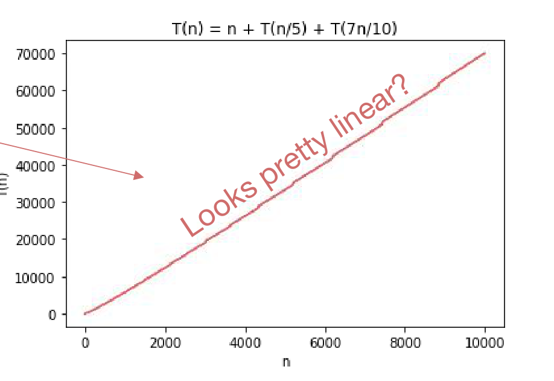
- 그래프가 직선으로 보이므로 \(O(n)\)이라고 추측하고 증명해 보겠습니다.
1.5 곁가지: 경고 (Aside: Warning!)
Step 2로 넘어가기 전에 반드시 짚어야 할 함정이 있습니다. 방금 세운 추측을 그대로 귀납 가설로 삼고 싶은 유혹이 들기 때문입니다.
“\(T(n) = O(n)\)”을 귀납 가설로 쓰는 것은 말이 되지 않습니다. Big-Oh의 정의를 펼쳐 보면 그 이유가 드러납니다. 형식적으로 그 문장은 다음과 같습니다.
\(n\)에 대한 귀납 가설: 어떤 \(n_0 > 0\)과 어떤 \(C > 0\)이 존재하여, 모든 \(n \ge n_0\)에 대해 \(T(n) \le C \cdot n\)이다.
문제는 귀납 가설이란 원래 특정한 하나의 \(n\)에 대한 명제여야 한다는 점입니다. 그런데 위 문장은 “충분히 큰 \(n\) 전부”를 이미 안에 품고 있어서, \(n\)에 대한 명제가 아니라 \(n\)과 무관한 명제가 되어 버립니다. 귀납이 굴러갈 자리가 사라지는 것입니다.
대신 \(C\)를 먼저 고정해야 합니다. 즉 귀납 가설은 “\(T(n) \le C \cdot n\)”이어야 하고, \(C\)는 명제 바깥에서 미리 정해진 상수여야 합니다. 3강 §3.7의 두 번째 예제에서 상수를 미지수로 남겨 둔 채 증명을 끌고 갔던 것도 정확히 같은 이유였습니다.
1.6 Step 2: 추측이 옳음을 증명한다 (Prove Our Guess Is Right)
\(C\)가 얼마여야 하는지는 아직 모릅니다. 그러니 \(C\)인 채로 증명을 끝까지 진행하고, 증명이 요구하는 조건에서 역산하겠습니다.
- 귀납 가설: \(T(n) \le C \cdot n\)
- 기저 사례: \(1 \le n \le 10\)인 모든 \(n\)에 대하여 \(1 = T(n) \le C \cdot n\)이어야 합니다. \(n \ge 1\)이므로 \(C \ge 1\)이면 충분합니다.
- 귀납 단계: \(k > 10\)이라 하고, \(1 \le n < k\)인 모든 \(n\)에 대해 귀납 가설이 성립한다고 가정합니다.
\[ \begin{aligned} T(k) \;&\le\; k + T\!\left(\frac{k}{5}\right) + T\!\left(\frac{7k}{10}\right) && (\text{재귀 관계식의 정의}) \\ &\le\; k + C \cdot \left(\frac{k}{5}\right) + C \cdot \left(\frac{7k}{10}\right) && (\text{귀납 가설}) \\ &=\; k + \frac{C}{5}k + \frac{7C}{10}k && (\text{정리}) \\ &=\; k\left(1 + \frac{9C}{10}\right) && \left(\tfrac{C}{5} = \tfrac{2C}{10}\right) \\ &\le\; C k \;\; ?? && (\text{여기가 관건}) \end{aligned} \]
마지막 줄이 성립할 조건을 \(C\)에 대해 풀면 됩니다.
\[1 + \frac{9C}{10} \le C \iff 1 \le C - \frac{9C}{10} = \frac{C}{10} \iff C \ge 10\]
| 증명의 지점 | \(C\)에 걸리는 조건 |
|---|---|
| 기저 사례 \(1 = T(n) \le Cn\) \((1 \le n \le 10)\) | \(C \ge 1\) |
| 귀납 단계 \(k\left(1 + \tfrac{9C}{10}\right) \le Ck\) | \(C \ge 10\) |
둘 다 만족시키려면 \(C \ge 10\)이면 되므로 \(C = 10\)으로 택합니다. 그러면 모든 \(n \ge 1\)에 대해 \(T(n) \le Cn\)을 만족하는 \(C\)가 존재하므로, Big-Oh의 정의에 의해 \(T(n) = O(n)\)입니다.
여기서 \(9/10\)이라는 숫자를 눈여겨봐 두시기 바랍니다. 이 값은 하위 문제 두 개의 크기 비율을 더한 \(\frac{1}{5} + \frac{7}{10} = \frac{9}{10}\)에서 나온 것이고, 그것이 \(1\)보다 작다는 사실이 \(C \ge 10\)이라는 유한한 조건을 만들어 냈습니다. 만약 이 합이 정확히 \(1\)이었다면 \(1 + C \le C\)가 되어 어떤 \(C\)로도 부등식이 성립하지 않았을 것입니다. §3.14에서 “왜 하필 5개씩 묶는가”를 물을 때 이 관찰이 그대로 답이 됩니다.
1.7 Step 3: Profit
이제 Step 1과 Step 2를 하지 않은 척하고, 처음부터 \(10\)을 알고 있었던 것처럼 증명문을 적습니다.
\(T(n) \le n + T\!\left(\dfrac{n}{5}\right) + T\!\left(\dfrac{7n}{10}\right)\) \((n > 10)\), \(T(n) = 1\) \((1 \le n \le 10)\)이라 하자.
증명.
- 귀납 가설: \(T(n) \le 10n\)
- 기저 사례: \(1 \le n \le 10\)인 모든 \(n\)에 대해 \(1 = T(n) \le 10n\)이므로 참입니다.
- 귀납 단계: \(k > 10\)이라 하고, \(1 \le n < k\)인 모든 \(n\)에 대해 귀납 가설이 성립한다고 가정하면 \[ \begin{aligned} T(k) &\le k + T\!\left(\frac{k}{5}\right) + T\!\left(\frac{7k}{10}\right) \\ &\le k + 10 \cdot \left(\frac{k}{5}\right) + 10 \cdot \left(\frac{7k}{10}\right) && (\text{귀납법에 의해}) \\ &= k + 2k + 7k \\ &= 10k \end{aligned} \] 이므로 \(n = k\)에 대해서도 귀납 가설이 성립합니다.
- 결론: 모든 \(n \ge 1\)에 대하여 \(T(n) \le 10n\)입니다. Big-Oh의 정의에서 \(n_0 = 1\), \(c = 10\)으로 두면 이는 곧 \(T(n) = O(n)\)입니다. \(\blacksquare\)
완성된 증명문 어디에도 미지수 \(C\)나 그래프 이야기는 등장하지 않습니다. 추측을 어떻게 얻었는지는 증명의 일부가 아니기 때문입니다.
1.8 여기까지 배운 것 (What Have We Learned?)
- 치환법은 마스터 정리가 통하지 않을 때에도 작동합니다. 예를 들어 하위 문제들의 크기가 서로 다를 때가 그렇습니다.
- Step 1: 추측을 만들어 낸다 — 쓸 수 있는 것은 다 던져 봅니다(throw the kitchen sink at it).
- Step 2: 추측이 옳음을 증명한다 — 상수 몇 개는 끝까지 미지수로 남겨 두었다가, 증명이 통하려면 그것들이 무엇이어야 하는지를 마지막에 확인해도 됩니다.
- Step 3: profit — Step 1과 2를 하지 않은 척하고 깔끔한 증명을 적습니다.
2. k-SELECT 문제 (The k-SELECT Problem)
2.1 문제 정의
크기 \(n\)인 배열 \(A\)와 \(k \in \{1, \dots, n\}\)이 주어졌을 때,
\[\textbf{SELECT}(A, k) \;=\; A \text{에서 } k \text{번째로 작은 원소}\]
를 반환하라. 이번 강의에서는 모든 배열의 원소가 서로 다르다(distinct)고 가정합니다. 또한 문제의 정의는 1-인덱스입니다 — \(k = 1\)이 가장 작은 원소를 뜻합니다.
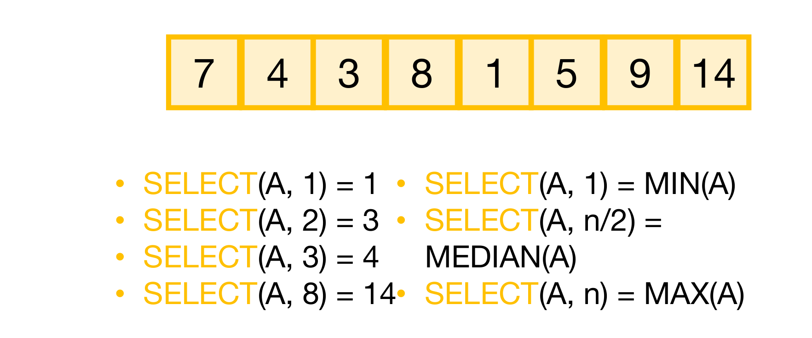
A[k-1]이 등장하는 이유를 미리 알려 줍니다. 이 그림은 “MIN은 쉬운데 MEDIAN은 왜 어려운가”라는 §2.3–2.5의 질문을 세우는 출발점입니다.\(k\)의 값에 따라 이 문제는 이미 이름을 가진 세 연산을 포함합니다.
| \(k\) | \(\mathrm{SELECT}(A,k)\) | 이름 |
|---|---|---|
| \(1\) | 가장 작은 원소 | \(\mathrm{MIN}(A)\) |
| \(n/2\) | 가운데 원소 | \(\mathrm{MEDIAN}(A)\) |
| \(n\) | 가장 큰 원소 | \(\mathrm{MAX}(A)\) |
2.2 \(O(n\log n)\) 알고리즘 (An \(O(n\log n)\)-time algorithm)
가장 단순한 해법은 정렬한 뒤 꺼내는 것입니다.
SELECT(A, k):
A = MERGESORT(A) # O(n log n)
return A[k-1] # 의사코드는 0-인덱스, 문제는 1-인덱스이므로 k-1- 실행 시간은 MergeSort가 지배하므로 \(O(n\log n)\)입니다.
- 그러니 이것이 기준선(benchmark)입니다. 우리가 앞으로 만들 알고리즘은 이보다 나아야 의미가 있습니다.
원본 슬라이드는 여기서 목표를 못박습니다 — “더 잘할 수 있을까? 우리는 \(O(n)\)을 바란다.” 동시에 붉은 주석으로 “\(O(n)\)보다 잘할 수는 없음을 보여라”는 연습 문제를 남깁니다. 배열의 모든 원소를 최소 한 번은 봐야 하므로 어떤 알고리즘도 \(\Omega(n)\) 아래로 내려갈 수 없다는 뜻이며, 따라서 \(O(n)\)은 도달 가능한 최선입니다.
2.3 목표: \(O(n)\) 알고리즘 (Goal: An \(O(n)\)-time algorithm)
\(k\)가 작을 때부터 시작해 봅시다. \(k = 1\), 즉 \(\mathrm{MIN}(A)\)는 누구나 알고 있습니다.
MIN(A):
ret = ∞
for i = 0, ..., n-1:
if A[i] < ret: # 이 안쪽은 O(1)
ret = A[i]
return ret # 루프는 O(n)번 도므로 전체 O(n)- 루프 내부의 작업은 \(O(1)\)이고, 루프는 \(O(n)\)번 돕니다.
- 따라서 시간 \(O(n)\)입니다.
\(k = 1\)은 해결되었습니다. 그렇다면 \(k\)를 하나씩 키워 가면 될까요?
2.4 \(\mathrm{SELECT}(A,2)\)는 어떤가
두 번째로 작은 값을 찾으려면 변수를 하나 더 들고 다니면 됩니다.
SELECT2(A):
ret = ∞
minSoFar = ∞
for i = 0, .., n-1:
if A[i] < ret and A[i] < minSoFar: # 새로운 최솟값 등장
ret = minSoFar # 기존 최솟값이 2등으로 밀림
minSoFar = A[i]
else if A[i] < ret and A[i] >= minSoFar: # 1등은 아니지만 2등은 되는 값
ret = A[i]
return ret- 여전히 \(O(n)\)입니다. 여기까지는 순조롭습니다(SO FAR SO GOOD).
- 다만 원본 슬라이드도 노란 주석으로 밝혀 두듯 이 알고리즘 자체는 그리 중요하지 않습니다 — 좋은 아이디어로 이어지지 않을 것이기 때문입니다.
2.5 \(\mathrm{SELECT}(A, n/2)\), 곧 \(\mathrm{MEDIAN}(A)\)는?
같은 방식을 밀고 나가면 중앙값에서는 이렇게 됩니다.
MEDIAN(A):
ret = ∞
minSoFar = ∞
secondMinSoFar = ∞
thirdMinSoFar = ∞
fourthMinSoFar = ∞
....- \(k\)가 클 때(\(n/2\)나 \(n\)처럼) 이 방법은 좋은 생각이 아닙니다. 필요한 변수의 개수가 \(k\)에 비례해 늘어나기 때문입니다.
- 결국 이것은 InsertionSort와 다를 바 없는 것이 되고, 2강에서 보았듯 InsertionSort는 \(O(n^2)\)였습니다.
즉 “\(k\)를 하나씩 키워 가며 변수를 늘린다”는 접근은 \(k = 1, 2\)에서만 값싸고, 정작 우리가 원하는 \(k = n/2\)에서는 정렬보다도 나빠집니다. 다른 아이디어가 필요합니다.
3. k-SELECT 해법 (k-SELECT Solution)
3.1 아이디어: 분할 정복 (Idea: Divide and Conquer!)
\(\mathrm{SELECT}(A,k)\)를 구하고 싶다고 합시다. 아이디어는 이렇습니다.
- 먼저 피벗(pivot)을 하나 고릅니다. 어떻게 고르는지는 나중에(§3.9 이후) 보겠습니다.
- 그 다음 배열을 “피벗보다 큰 것”과 “피벗보다 작은 것”으로 분할(partition)합니다.
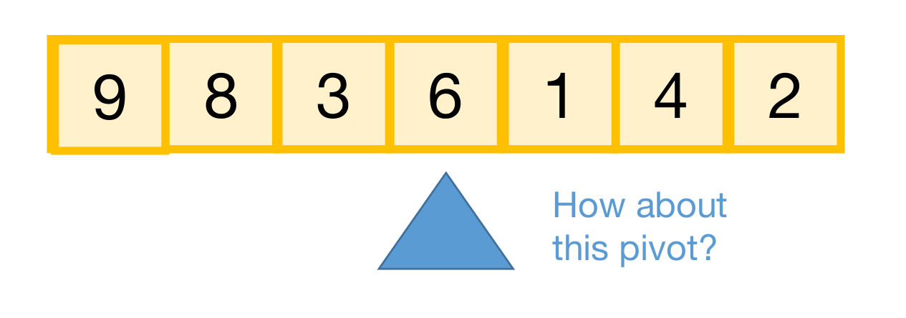
분할이 끝나면 배열은 세 덩어리가 됩니다.
- \(L\) = 피벗 값 \(A[\texttt{pivot}]\)보다 작은 원소들의 배열
- \(A[\texttt{pivot}]\) = 피벗 값 그 자체
- \(R\) = 피벗 값보다 큰 원소들의 배열
3.2 재귀로 이어지는 세 갈래 (Idea Continued…)
이제 결정적인 관찰이 나옵니다. 분할만 해 두면 \(k\)번째 값이 어디에 있는지 즉시 알 수 있습니다. 위 예에서 \(L = [3,1,4,2]\)이므로 \(\mathrm{len}(L) + 1 = 5\)입니다.
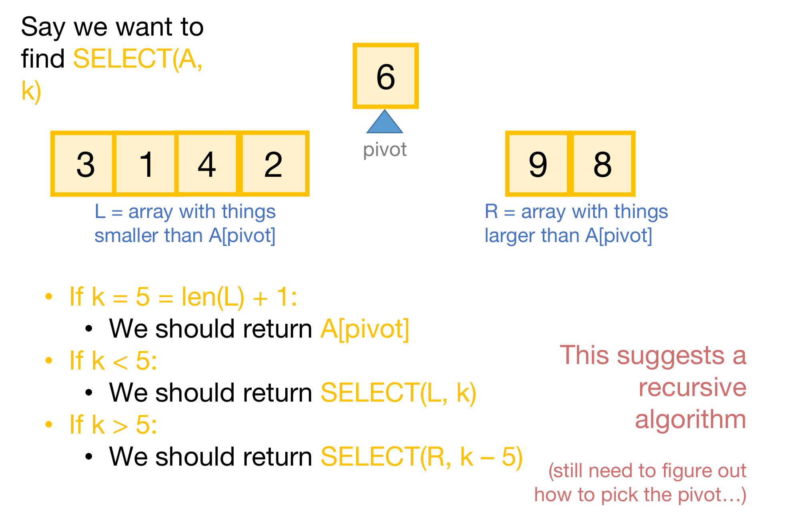
여기서 재귀 호출이 한 번뿐이라는 사실이 결정적입니다. MergeSort는 양쪽을 모두 정렬해야 해서 \(2 \cdot T(n/2)\)였지만, SELECT는 \(k\)번째 값이 있는 쪽만 따라 내려가면 되므로 \(T(\cdot)\)가 하나뿐입니다. 마스터 정리의 언어로 말하면 \(a = 1\)이라는 뜻이고, 3강 §2.8.3의 “길고 마른 트리”에 해당해 총 작업량이 맨 위 레벨에 몰립니다. \(O(n)\)을 바라볼 수 있는 근거가 바로 여기에 있습니다.
3.3 의사코드 (Pseudocode)
지금까지의 아이디어를 코드로 옮기면 다음과 같습니다. 아직 정하지 않은 부분은 함수 두 개로 감싸 둡니다.
getPivot(A)— 피벗을 하나 골라 준다. 어떻게? 나중에 보겠습니다.Partition(A, p)— \(A\)를 \(L\), \(A[p]\), \(R\)로 쪼갠다.
Select(A, k):
if len(A) <= 50: # 기저 사례
A = MergeSort(A) # 크기가 상수면 어떤 정렬도 O(1)
return A[k-1]
p = getPivot(A)
L, pivotVal, R = Partition(A, p)
if len(L) == k-1: # Case 1: 운 좋게 k번째 값을 바로 찾았다
return pivotVal
else if len(L) > k-1: # Case 2: k번째 값은 앞쪽 덩어리에 있다
return Select(L, k)
else if len(L) < k-1: # Case 3: k번째 값은 뒤쪽 덩어리에 있다
return Select(R, k - len(L) - 1)\(\mathrm{len}(A) = O(1)\)이면 어떤 정렬 알고리즘을 쓰든 \(O(1)\) 시간에 끝납니다. 상수 크기의 입력을 처리하는 비용은 \(n\)에 의존하지 않기 때문입니다. 그래서 임계값이 \(50\)인지 \(100\)인지는 점근적으로 아무 의미가 없고, 실제로 §3.14에서 피벗을 고를 때 다섯 개씩 묶은 그룹의 중앙값을 \(O(1)\)에 구한다고 말할 수 있는 근거도 같은 논리입니다.
Case 3에서 \(k\)를 그냥 넘기지 않고 \(k - \mathrm{len}(L) - 1\)로 보정하는 이유도 짚어 둘 만합니다. \(R\)의 입장에서는 자기보다 작은 원소 \(\mathrm{len}(L)\)개와 피벗 \(1\)개가 이미 잘려 나갔으므로, 전체에서의 \(k\)번째는 \(R\) 안에서는 \(k - \mathrm{len}(L) - 1\)번째가 됩니다.
3.4 정말 동작하는가? (Does It Work?)
- 4강의 Python 노트북이 여러 가지 피벗 선택 방법으로 이 알고리즘을 구현해 두었습니다. 동작하는 것처럼 보입니다.
- 강의 노트에는 어떤 피벗 선택 방식을 쓰더라도 이 알고리즘이 옳게 동작한다는 것을 귀납법으로 엄밀히 증명해 두었습니다. 증명 가능하게 동작합니다.
- 원본 슬라이드는 덧붙입니다 — 이것은 재귀 알고리즘의 정확성을 증명하는 좋은 예제이기도 합니다.
정확성이 피벗 선택과 무관하다는 점이 중요합니다. 피벗을 어떻게 고르든 답은 항상 맞고, 피벗 선택이 좌우하는 것은 오직 실행 시간입니다. 그래서 이후의 논의 전체가 “어떤 피벗이 빠른가”라는 한 가지 질문에 집중될 수 있습니다.
3.5 실행 시간은? (What Is the Running Time?)
피벗을 \(O(n)\) 시간에 고른다고 가정하면, 재귀 관계식은 다음과 같습니다.
\[ T(n) = \begin{cases} T(\mathrm{len}(L)) + O(n) & \text{if } \mathrm{len}(L) > k-1 \\[4pt] T(\mathrm{len}(R)) + O(n) & \text{if } \mathrm{len}(L) < k-1 \\[4pt] O(n) & \text{if } \mathrm{len}(L) = k-1 \end{cases} \]
- 그렇다면 \(\mathrm{len}(L)\)과 \(\mathrm{len}(R)\)은 얼마인가?
- 그것은 피벗을 어떻게 고르느냐에 달려 있습니다.
원본 슬라이드가 스스로 던지고 답하는 질문입니다. 가장 좋은 방법은 언제나 \(\mathrm{len}(L) = k-1\)이 되도록 피벗을 고르는 것입니다. 그러면 재귀 호출 없이 Case 1에서 곧바로 끝나기 때문입니다.
하지만 우리에게는 \(k\)에 대한 통제권이 없습니다. \(k\)는 호출자가 주는 값이고, 우리가 통제할 수 있는 것은 피벗을 고르는 방식뿐입니다. 그러므로 목표는 “\(k\)에 맞춘 피벗”이 아니라 “어떤 \(k\)가 오더라도 배열을 충분히 작게 줄여 주는 피벗”이어야 합니다.
3.6 이상적인 피벗 (The Ideal Pivot)
가장 좋은 상황을 먼저 그려 봅시다. 입력을 정확히 절반으로 가르는 피벗입니다.
\[\mathrm{len}(L) = \mathrm{len}(R) = \frac{n-1}{2}\]
이 경우 재귀 호출은 크기 \(n/2\)인 배열 하나에 대해서만 일어나므로
\[T(n) \le T\!\left(\frac{n}{2}\right) + O(n)\]
이고, 마스터 정리를 적용하면 \(a = 1\), \(b = 2\), \(d = 1\)이므로 \(b^d = 2 > 1 = a\), 즉 \(a < b^d\)인 두 번째 경우입니다.
\[T(n) \le O\!\left(n^d\right) = O(n)\]
그렇게만 되면 더할 나위 없습니다. 다만 요다는 다시 경고를 남깁니다 — “여기에 적용되지 않는다, 마스터 정리는. 문제 크기에 대해 근거 없는 가정을 하고 있다, 우리는.” 절반으로 갈리는 피벗을 실제로 구할 수 있다는 보장이 아직 없기 때문입니다.
3.7 최악의 피벗 (The Worst Pivot)
반대쪽 극단도 봐야 합니다.
- 피벗의 선택이 \(A\)에 의존하지 않는다고 합시다. 예를 들어 “항상 첫 번째 원소를 고른다”, “항상 가운데 위치를 고른다”처럼요.
- 그러면 우리가 어떤 피벗을 고를지 알고 있는 나쁜 사람(bad guy)이 배열 \(A\)를 직접 만들어 낼 수 있습니다.
원본 슬라이드의 그림은 이 상황을 보여 줍니다. 적대자는 우리가 고를 위치에 \(1\)을, 그 다음에 고를 위치에 \(2\)를, 그 다음에 \(3\)을 심어 둡니다. 그러면 매 단계에서 피벗이 남은 배열의 최솟값이 되어 \(L\)은 항상 비고 \(R\)에는 나머지 전부가 남습니다. 재귀 관계식은
\[T(n) = T(n-1) + O(n)\]
이 되고, 이를 풀면 \(T(n) = O(n^2)\)입니다. 정렬해서 푸는 \(O(n\log n)\)보다도 나쁩니다.
3.8 차이는 실제로 드러납니다 (The Distinction Matters!)
이것은 이론상의 걱정이 아닙니다. 실제로 측정하면 세 방식이 눈에 띄게 갈립니다.
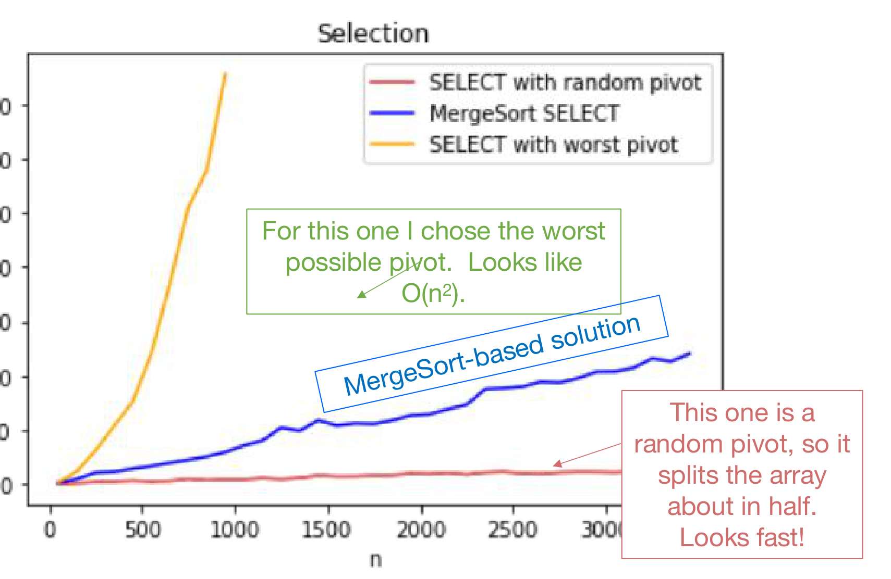
3.9 좋은 피벗은 어떻게 고르는가 (How Do We Pick a Good Pivot?)
- 무작위로?
- 나쁜 사람이 없다면 잘 통합니다.
- 하지만 우리의 피벗 선택을 들여다볼 수 있는 나쁜 사람이 있다면, 그것은 최악의 피벗을 고르는 것과 다를 바 없습니다. 무작위성도 상대가 예측할 수 있으면 무작위성이 아니기 때문입니다.
실무에서는 나쁜 사람이 없는 경우가 많습니다. 그런 경우에는 그냥 무작위 피벗을 고르면 아주 잘 동작합니다. 이에 대해서는 다음 강의에서 더 다룹니다.
그럼에도 이번 강의에서는 나쁜 사람이 있다고 가정하겠습니다. 이유는 세 가지입니다.
- 매우 강력한 보장을 얻게 됩니다. 어떤 입력에 대해서도 성립하는 최악의 경우 보장입니다.
- 정말 영리한 알고리즘을 보게 됩니다. 그리고 그 알고리즘은 필연적으로 피벗을 고르기 위해 \(A\)를 들여다볼 수밖에 없습니다 — 입력을 보지 않고 고르는 피벗은 §3.7에서 보았듯 적대자에게 무력하기 때문입니다.
- 치환법을 쓸 기회가 생깁니다.
3.10 접근 방식 (Approach)
앞으로의 세 걸음을 미리 밝혀 둡니다.
- 먼저 이상적인 피벗이 무엇인지 알아냅니다. — 다만 그것을 얻을 수는 없을 것입니다.
- 그 다음 꽤 괜찮은 피벗이 무엇인지 알아냅니다. — 다만 그것을 어떻게 얻는지는 여전히 모를 것입니다.
- 마지막으로 그 꽤 괜찮은 피벗을 얻는 방법을 봅니다! — 그리고 자축합니다.
3.11 이상적인 피벗은 무엇인가 (How Do We Pick Our Ideal Pivot?)
- 이상적인 세계에 살고 싶습니다.
- 입력을 절반으로 가르는 피벗을 고른다는 것은,
- 곧 중앙값을 고른다는 것이고,
- 곧 \(\mathrm{SELECT}(A, n/2)\)를 고른다는 것입니다.
\(\mathrm{SELECT}\)를 빠르게 풀기 위해 좋은 피벗이 필요한데, 그 좋은 피벗이 바로 \(\mathrm{SELECT}(A, n/2)\)입니다. 즉 원래 문제를 풀어야 원래 문제를 풀 수 있는 상황입니다.
이 순환이 §3.10에서 “이상적인 피벗은 얻을 수 없을 것”이라고 미리 말해 둔 이유이며, 다음 절에서 이상을 포기하고 근사로 내려가는 결정적인 전환의 동기입니다.
3.12 ‘충분히 좋은’ 피벗 (How About a Good Enough Pivot?)
- 이상적인 세계를 근사(approximate)해 봅시다.
- 입력을 정확히 절반이 아니라 대략(about) 절반으로 가르는 피벗을 고르는 것입니다. 어쩌면 이쪽이 더 쉬울지도 모릅니다.
구체적으로는 다음을 목표로 삼습니다.
\[\frac{3n}{10} < \mathrm{len}(L) < \frac{7n}{10}, \qquad \frac{3n}{10} < \mathrm{len}(R) < \frac{7n}{10}\]
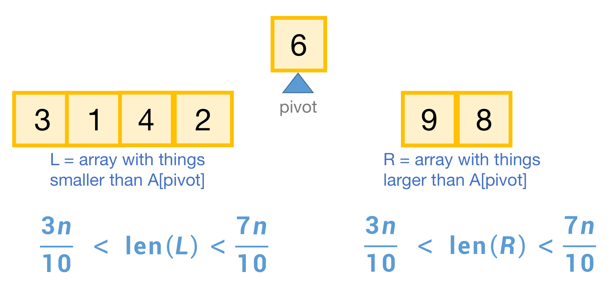
CHOOSEPIVOT 알고리즘의 명세서 역할을 합니다.이 정도로도 충분한가? 확인해 봅시다. 재귀 호출이 일어나는 쪽의 크기가 최대 \(7n/10\)이므로
\[T(n) \le T\!\left(\frac{7n}{10}\right) + O(n)\]
이고, 마스터 정리로 읽으면 \(a = 1\), \(b = 10/7\), \(d = 1\)입니다. \(b^d = 10/7 > 1 = a\)이므로 \(a < b^d\)인 두 번째 경우이고,
\[T(n) \le O\!\left(n^d\right) = O(n)\]
여전히 좋습니다(STILL GOOD). 정확히 절반이 아니어도 상수 비율로만 줄어들면 점근적 결론은 바뀌지 않습니다. 3강 §2.8.3의 “길고 마른 트리”에서 보았듯, \(a < b^d\)인 경우에는 맨 위 레벨의 작업량이 전체를 지배하기 때문입니다.
원본 슬라이드도 노란 주석으로 이 시점의 위치를 정확히 표시해 둡니다 — “그런 피벗을 얻을 수 있는지는 여전히 모르지만, 적어도 목표와 방향은 생겼다.”
3.13 다시 분할 정복 (Another Divide-and-Conquer Alg!)
이제 그 피벗을 실제로 만들 차례입니다. 열쇠는 다음 관찰입니다.
- 우리는 아직 \(\mathrm{SELECT}(A, n/2)\)를 풀 수 없습니다.
- 하지만 더 작은 \(m\)에 대해서라면 \(\mathrm{SELECT}(B, m/2)\)를 분할 정복으로 풀 수 있습니다 (여기서 \(\mathrm{len}(B) = m\)).
- 보조정리(Lemma): 부분 중앙값들의 중앙값은 진짜 중앙값에 가깝습니다.
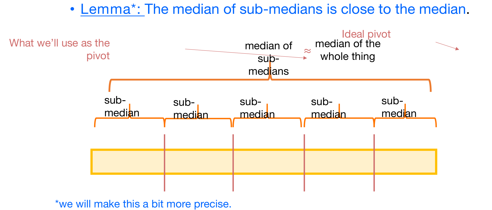
자기 자신을 더 작은 크기로 호출해 근사 해를 얻고, 그 근사 해를 다시 자기 자신을 가속하는 데 쓴다 — 이것이 이 알고리즘이 “정말 영리하다”고 불리는 이유입니다.
3.14 피벗을 고르는 법 (How to Pick the Pivot)
위 아이디어를 알고리즘으로 옮기면 다음과 같습니다.
CHOOSEPIVOT(A):
m = ceil(n/5) # 크기 5 이하인 그룹 m개로 나눈다
for i = 1, ..., m:
p_i = (i번째 그룹의 중앙값) # 그룹 크기가 5이므로 각각 O(1)
p = SELECT([p_1, p_2, p_3, ..., p_m], m/2) # 중앙값들의 중앙값 (재귀 호출)
return A에서 p의 인덱스for루프의 비용: 각 그룹의 크기가 \(5\)이므로 그룹 하나의 중앙값을 구하는 데 \(O(1)\)입니다. 그룹이 \(m\)개이므로 루프 전체는 \(O(m) = O(n)\)입니다.- 마지막에서 두 번째 줄이 재귀 호출입니다. 크기 \(m = \lceil n/5 \rceil\)인 배열에 대해 \(\mathrm{SELECT}\)를 부르며, 이것이 나중에 재귀 관계식의 \(T(n/5)\) 항이 됩니다.
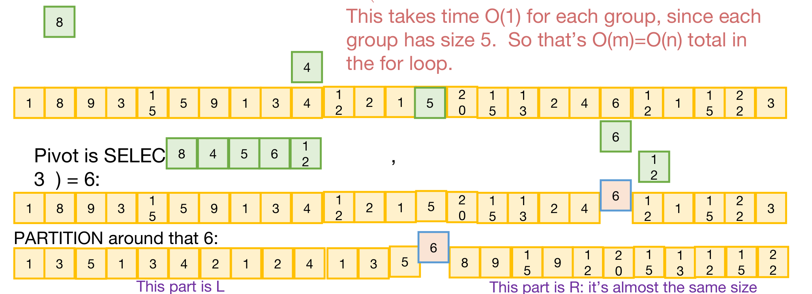
CHOOSEPIVOT을 크기 \(25\)인 배열에 실제로 적용해 본 예입니다. 맨 위 노란 배열이 입력이고, 초록색으로 강조된 칸들이 각 다섯 개짜리 그룹에서 찾아낸 중앙값 \(p_i\)입니다 — 위쪽에 따로 떠 있는 초록 상자 \(8, 4, 5, 6, 12\)가 그 다섯 개의 부분 중앙값을 모아 놓은 것입니다. 붉은 주석이 밝히듯 각 그룹은 크기가 \(5\)로 고정되어 있어 중앙값 하나를 구하는 데 \(O(1)\)이 들고, 따라서 for 루프 전체가 \(O(m) = O(n)\)입니다. 가운데 줄의 “Pivot is SELECT(\([8,4,5,6,12]\), 3) = 6”이 부분 중앙값 다섯 개에 대해 다시 \(\mathrm{SELECT}\)를 재귀 호출하는 단계이며, 그 결과 얻은 파란 테두리의 \(6\)이 최종 피벗입니다. 맨 아래 줄은 그 \(6\)을 기준으로 PARTITION한 결과로, 보라색 라벨이 표시하듯 왼쪽이 \(L\), 오른쪽이 \(R\)이고 “it’s almost the same size”라는 주석 그대로 두 덩어리의 크기가 거의 같습니다. 이 그림은 §3.15의 보조정리가 주장하는 바가 실제 배열에서 어떻게 나타나는지를 눈으로 확인시켜 줍니다.원본 슬라이드는 이 질문을 던져 놓고 “개념 확인 문제(concept check questions)를 보라”며 답을 남겨 두지 않습니다. 표준적인 설명은 §1.6에서 이미 나온 산술과 정확히 같습니다.
- \(5\)개씩 묶으면 재귀 관계식이 \(T(n) \le T\!\left(\frac{n}{5}\right) + T\!\left(\frac{7n}{10}\right) + O(n)\)이고, 두 하위 문제의 비율 합은 \(\frac{1}{5} + \frac{7}{10} = \frac{9}{10} < 1\)입니다.
- \(3\)개씩 묶으면 각 그룹이 보장하는 원소가 \(3\)개 중 \(2\)개로 줄어 분할 보장이 \(\frac{1}{3} : \frac{2}{3}\)까지만 내려가고, 재귀 관계식은 \(T(n) \le T\!\left(\frac{n}{3}\right) + T\!\left(\frac{2n}{3}\right) + O(n)\)이 됩니다. 이때 비율 합은 \(\frac{1}{3} + \frac{2}{3} = 1\)입니다.
§1.6의 귀납 단계를 다시 보면, 귀납 가설 \(T(n) \le Cn\)을 대입했을 때 남는 부등식은 \(1 + (\text{비율 합}) \cdot C \le C\)였습니다. 비율 합이 \(1\)이면 \(1 + C \le C\)가 되어 어떤 \(C\)로도 성립하지 않습니다. 즉 \(3\)개씩 묶으면 이 증명이 무너지고, 실제로 그 재귀식의 해는 \(\Theta(n\log n)\)입니다. \(1\)보다 작은 여유를 남기는 것이 \(5\)를 고르는 이유입니다.
3.15 주장: 이것이 통한다 (CLAIM: This Works)
위와 같이 피벗을 고르면 다음이 성립합니다.
\[|L| \le \frac{7n}{10} + 5 \qquad \text{그리고} \qquad |R| \le \frac{7n}{10} + 5\]
즉 이 피벗은 배열을 근사적으로(approximately) 절반으로 가릅니다. 증명은 §5에서 하겠습니다.
§3.12에서 목표로 삼았던 것은 \(\mathrm{len}(L), \mathrm{len}(R) < \frac{7n}{10}\)이었는데, 실제로 얻은 보장에는 \(+5\)가 붙어 있습니다. 이 상수항이 뒤에서 어떻게 처리되는지는 §4.1에서 다룹니다.
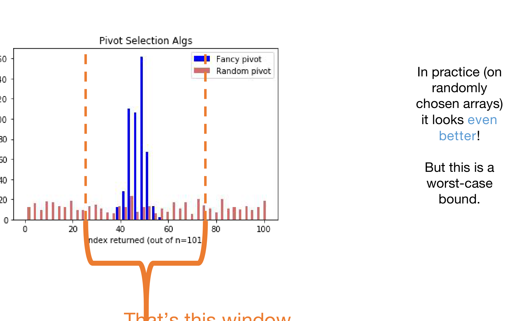
CHOOSEPIVOT이 고른 피벗으로, 가운데 \(40\)–\(55\) 부근에 뾰족하게 몰려 있습니다. 주황색 점선 두 개와 그 아래 주황색 괄호가 보조정리가 보장하는 창(window), 즉 \(\frac{3n}{10}\)과 \(\frac{7n}{10}\)에 해당하는 구간이며, 파란 막대가 전부 그 안에 들어 있음을 볼 수 있습니다. 오른쪽 주석이 짚듯 실제로는 보장보다 훨씬 좋게 나오지만, 보조정리는 어디까지나 최악의 경우에 대한 보장이라는 점이 이 그림의 요지입니다.4. 치환법의 귀환 (Return of the Substitution Method)
4.1 실행 시간의 재귀 관계식 (How About the Running Time?)
보조정리가 참이라고 하고(실제로 참입니다), 실행 시간의 재귀 관계식을 세워 봅시다. 재귀 호출은 두 군데에서 일어납니다.
\[\boxed{\;T(n) \;\le\; T\!\left(\frac{n}{5}\right) + T\!\left(\frac{7n}{10}\right) + O(n)\;}\]
| 항 | 어디서 나오는가 |
|---|---|
| \(T\!\left(\dfrac{n}{5}\right)\) | CHOOSEPIVOT 안에서 부분 중앙값 \(m = \lceil n/5\rceil\)개에 대해 \(\mathrm{SELECT}\)를 한 번 더 호출한다 |
| \(T\!\left(\dfrac{7n}{10}\right)\) | CHOOSEPIVOT 바깥에서 크기 \(\frac{7n}{10} + 5\) 이하인 배열(\(L\) 또는 \(R\))에 대해 \(\mathrm{SELECT}\)를 많아야 한 번 호출한다 |
| \(O(n)\) | 그룹을 나누고 각 중앙값을 구하는 for 루프(\(O(n)\))와 Partition(\(O(n)\)) |
원본 슬라이드는 편의상 \(+5\)를 떨어뜨리되 최종 답이 바뀌지 않는다고 말하며, 그 이유를 힌트로만 남깁니다 — “\(T'(n) := T(n+1000)\)으로 정의하고 \(T'\)에 대한 재귀 관계식을 써 보라.” 힌트를 따라가 보겠습니다.
\(T\)가 감소하지 않는 함수라고 하고(입력이 커지면 비용도 커지므로 자연스러운 가정입니다), 정직한 식 \(T(n) \le T\!\left(\frac{n}{5}\right) + T\!\left(\frac{7n}{10} + 5\right) + O(n)\)에서 출발합니다. \(T'(n) = T(n + 1000)\)으로 두면
\[ \begin{aligned} T'(n) = T(n + 1000) \;&\le\; T\!\left(\frac{n+1000}{5}\right) + T\!\left(\frac{7(n+1000)}{10} + 5\right) + O(n) \\ &=\; T\!\left(\frac{n}{5} + 200\right) + T\!\left(\frac{7n}{10} + 705\right) + O(n) \end{aligned} \]
이고, \(200 \le 1000\)이며 \(705 \le 1000\)이므로 \(T\)가 감소하지 않는다는 가정에서
\[T'(n) \;\le\; T\!\left(\frac{n}{5} + 1000\right) + T\!\left(\frac{7n}{10} + 1000\right) + O(n) \;=\; T'\!\left(\frac{n}{5}\right) + T'\!\left(\frac{7n}{10}\right) + O(n)\]
를 얻습니다. \(T'\)은 \(+5\)가 없는 깨끗한 형태의 재귀식을 만족하므로 \(T'(n) = O(n)\)이고, 따라서 \(T(n) = T'(n - 1000) = O(n)\)입니다. 상수 \(1000\)은 \(200\)과 \(705\)를 모두 덮을 만큼 크기만 하면 되므로 특별한 값이 아닙니다.
4.2 치환법을 부를 때입니다 (This Sounds Like a Job For…)
\[T(n) \le T\!\left(\frac{n}{5}\right) + T\!\left(\frac{7n}{10}\right) + O(n)\]
공교롭게도 이 식은 강의 서두인 §1.3에서 이미 풀어 둔 그 식입니다. 마스터 정리는 하위 문제의 크기가 서로 달라 손대지 못하지만, 치환법은 §1.6–1.7에서 이미 답을 냈습니다.
\[\textbf{결론: } \quad T(n) = O(n)\]
\(\mathrm{SELECT}\)를 \(O(n)\)에 풀 수 있습니다. §2.2의 기준선 \(O(n\log n)\)을 실제로 넘어섰고, §2.2에서 언급한 하한 \(\Omega(n)\)과 맞물려 이것이 도달 가능한 최선임까지 알 수 있습니다.
원본 슬라이드는 보라색 주석으로 정직하게 단서를 답니다 — “엄밀히 말하면 우리가 증명한 것은 마지막 항이 \(+n\)일 때이지, 그것이 Big-Oh일 때가 아니다.” §1.3의 식은 \(T(n) \le T(n/5) + T(7n/10) + n\)이었는데 지금 필요한 것은 \(+O(n)\)입니다.
메우는 방법은 §1.6의 계산을 그대로 반복하는 것입니다. \(+O(n)\)이라는 것은 어떤 상수 \(c\)와 \(n_0\)가 있어 추가 작업량이 \(c \cdot n\) 이하라는 뜻이므로, 귀납 단계의 부등식은
\[T(k) \;\le\; ck + \frac{C}{5}k + \frac{7C}{10}k \;=\; k\left(c + \frac{9C}{10}\right) \;\le\; Ck\]
가 되고, 조건은 \(c \le \frac{C}{10}\), 즉 \(C \ge 10c\)입니다. §1.6에서 \(c = 1\)이어서 \(C \ge 10\)이 나왔던 자리에 \(c\)가 들어왔을 뿐이며, \(c\)가 상수인 한 \(C = 10c\) 역시 상수이므로 결론 \(T(n) = O(n)\)은 그대로입니다.
4.3 접근 방식 되짚기 (Recap of Approach)
§3.10에서 세운 세 걸음이 모두 채워졌습니다.
| 걸음 | 그때의 계획 | 실제로 무엇이었나 |
|---|---|---|
| ① | 이상적인 피벗이 무엇인지 알아낸다 | 중앙값을 찾는 것 — 다만 그것이 원래 문제였다 |
| ② | 꽤 괜찮은 피벗이 무엇인지 알아낸다 | 근사 중앙값 — \(\frac{3n}{10}\)과 \(\frac{7n}{10}\) 사이로 가르면 충분하다 |
| ③ | 그 피벗을 얻는 방법을 본다 | 중앙값들의 중앙값과 분할 정복! |
4.4 실제로는? (In Practice?)
이론의 승리가 곧 실무의 승리는 아닙니다.
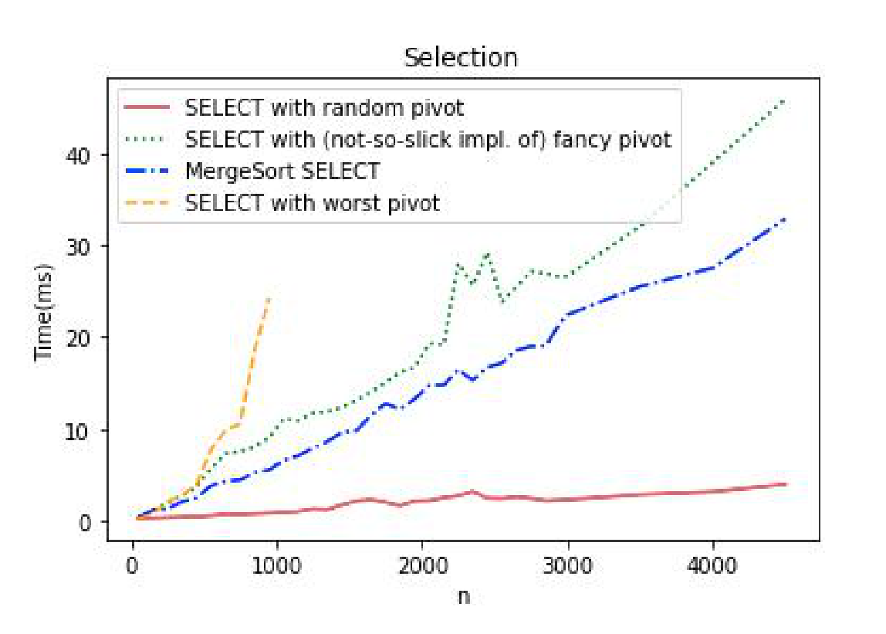
- 썩 매끄럽지 않은 구현으로는, 우리의 화려한 SELECT가 MergeSort 기반 SELECT보다 느립니다.
- 하지만 \(O(n)\)이 \(O(n\log n)\)보다 나은 것 아니었나요? 어떻게 이럴 수 있을까요?
- 우리 증명에서 \(n\) 앞에 붙은 상수가 얼마였는지 생각해 보면 됩니다. \(20\)? \(30\)? 점근 표기는 상수를 감추지만, 실제 실행 시간은 상수를 감추지 않습니다.
- 적대적이지 않은 입력에서는 무작위 피벗 선택이 훨씬 낫습니다.
- 교훈: 사악한 배열을 예상할 이유가 없다면 그냥 무작위 피벗을 고르십시오.
4.5 여기까지 배운 것 (What Have We Learned? — Pending the Lemma)
- \(\mathrm{SELECT}\)를 \(O(n)\) 시간에 푸는 것이 가능합니다. 분할 정복!
- 결정론적(deterministic) 알고리즘을 원하거나, 나쁜 사람이 배열을 고를 것으로 예상된다면 피벗을 영리하게 고르십시오. 여기에도 분할 정복!
- 나쁜 사람을 예상할 이유가 없다면, 실무에서는 그냥 무작위 피벗을 고르는 편이 낫습니다.
5. 보조정리의 증명 (Proof of That Lemma)
5.1 증명할 것
\(L\)과 \(R\)이 위에서 제시한 알고리즘 \(\mathrm{SELECT}\)에서와 같다고 하면,
\[|L| \le \frac{7n}{10} + 5 \qquad \text{그리고} \qquad |R| \le \frac{7n}{10} + 5\]
이다.
- 여기서는 그림으로 하는 증명(proof by picture)을 보겠습니다.
- 문장으로 쓴 엄밀한 증명(proof by proof)은 강의 노트에 있습니다.
5.2 그림으로 하는 증명 (Proof by Picture)
5.2.1 출발: \(m\)개의 그룹
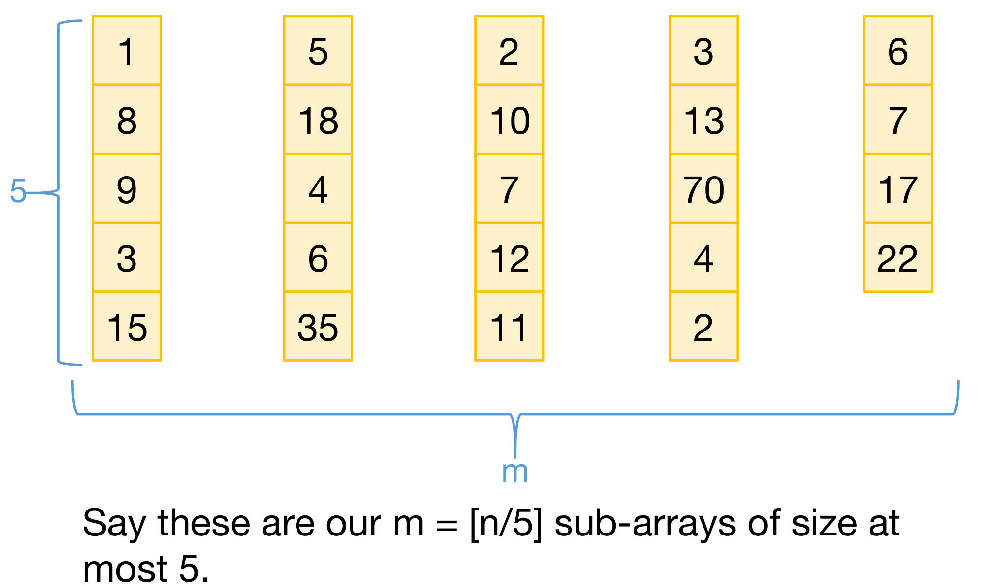
CHOOSEPIVOT이 만든 \(m = \lceil n/5 \rceil\)개의 부분 배열이며, 왼쪽의 파란 괄호와 숫자 \(5\)는 각 그룹의 크기가 최대 \(5\)임을, 아래쪽 파란 괄호와 \(m\)은 그룹의 개수를 나타냅니다. 다섯 그룹의 내용은 각각 \([1,8,9,3,15]\), \([5,18,4,6,35]\), \([2,10,7,12,11]\), \([3,13,70,4,2]\), \([6,7,17,22]\)이고, 마지막 그룹만 원소가 네 개인 것에 주목해야 합니다 — \(n\)이 \(5\)의 배수가 아닐 때 생기는 이 “자투리(leftovers)” 그룹이 §5.2.5의 개수 세기에서 \(-2\)를 만들어 내는 원인이 됩니다. 이 시점에서 각 그룹 내부는 정렬되어 있지 않습니다.5.2.2 머릿속에서 정렬하고 중앙값을 찾는다
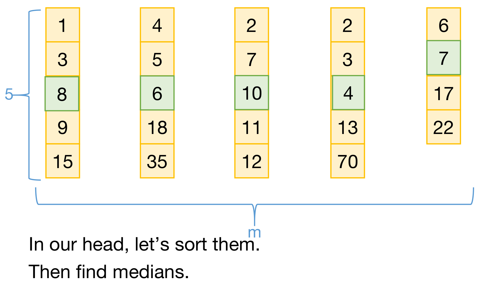
5.2.3 중앙값 순으로 열을 정렬하고, 그중 가운데를 피벗으로 삼는다
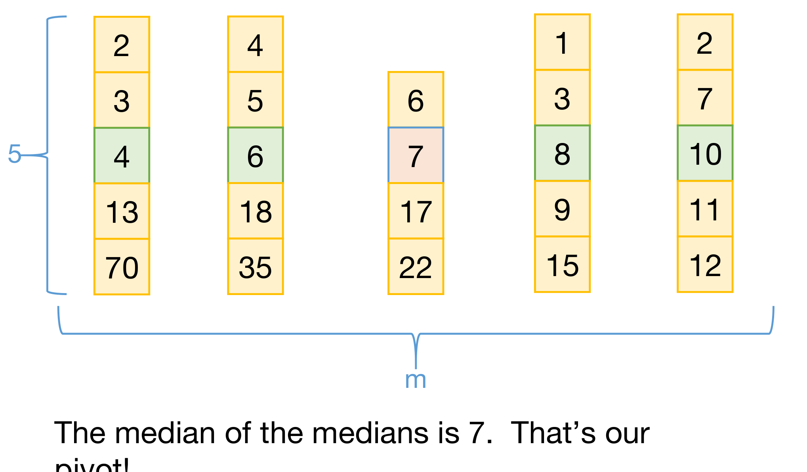
5.2.4 피벗보다 작은 원소는 몇 개인가
원본 슬라이드는 여기서 증명의 전략을 밝힙니다 — “피벗보다 작은 원소가 많다는 것을 보이겠다. 그러면 피벗보다 큰 원소는 그리 많지 않게 된다.” \(|R|\)을 직접 세는 대신 \(|L|\) 쪽을 아래에서 묶어 그 여집합을 위에서 묶는 우회입니다.
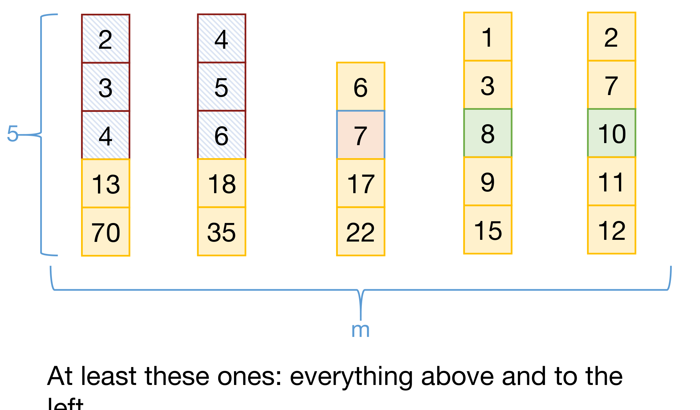
5.2.5 그 개수를 센다
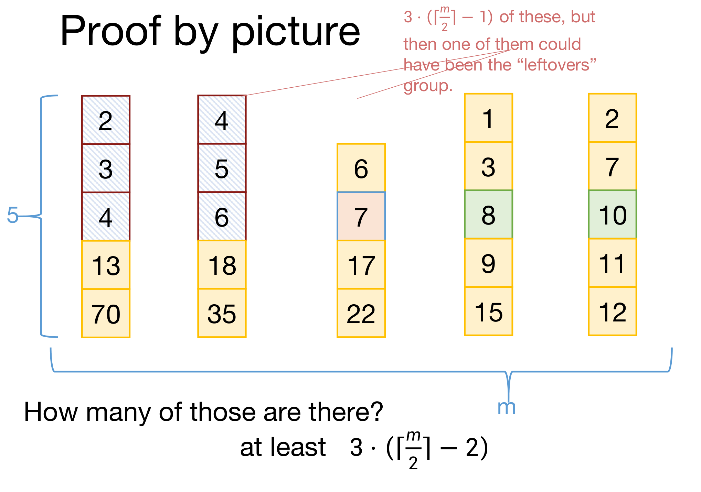
5.2.6 그러면 피벗보다 큰 원소는 몇 개인가
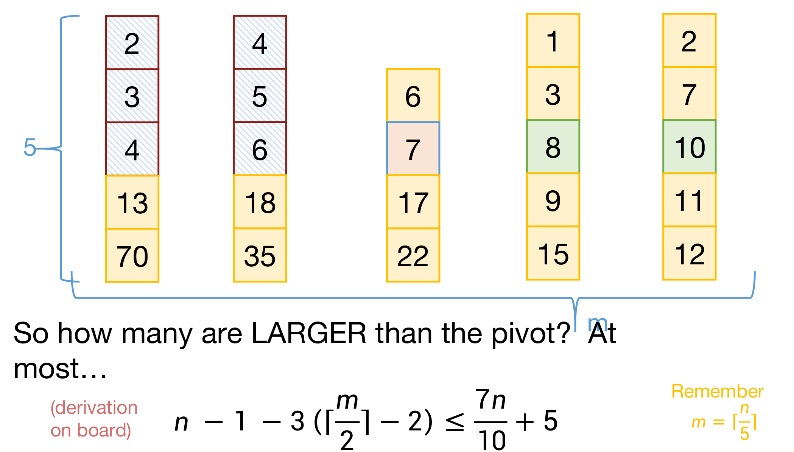
전체 \(n\)개의 원소는 피벗 자신 \(1\)개, 피벗보다 작은 원소들, 피벗보다 큰 원소들로 나뉩니다. 따라서
\[|R| \;=\; n - 1 - (\text{피벗보다 작은 원소의 개수}) \;\le\; n - 1 - 3\left(\left\lceil \frac{m}{2}\right\rceil - 2\right)\]
입니다. 슬라이드가 “칠판에서”라고 남긴 마지막 전개를 채우면 다음과 같습니다.
\[ \begin{aligned} n - 1 - 3\left(\left\lceil \frac{m}{2}\right\rceil - 2\right) &= n - 1 - 3\left\lceil \frac{m}{2}\right\rceil + 6 && (\text{괄호를 푼다}) \\ &= n + 5 - 3\left\lceil \frac{m}{2}\right\rceil \\ &\le n + 5 - 3 \cdot \frac{m}{2} && \left(\left\lceil \tfrac{m}{2}\right\rceil \ge \tfrac{m}{2}\right) \\ &\le n + 5 - \frac{3}{2} \cdot \frac{n}{5} && \left(m = \left\lceil \tfrac{n}{5}\right\rceil \ge \tfrac{n}{5}\right) \\ &= n + 5 - \frac{3n}{10} \\ &= \frac{7n}{10} + 5 \end{aligned} \]
두 번의 부등호는 모두 천장 함수가 원래 값보다 크거나 같다는 사실만 쓰며, 빼는 항 앞에 음수 부호가 붙어 있으므로 부등호의 방향이 그대로 유지됩니다.
5.3 나머지 절반 (That Was One Part of the Lemma)
지금까지 증명한 것은 두 부등식 중 \(|R| \le \frac{7n}{10} + 5\) 하나입니다.
나머지 한쪽 \(|L| \le \frac{7n}{10} + 5\)는 정확히 같은 방식으로 증명됩니다. 이번에는 피벗보다 큰 원소가 많다는 것을 보이면 되는데, §5.2.4의 논증에서 방향만 뒤집어 피벗의 오른쪽 열들의 아래쪽 세 칸을 세면 됩니다. 그 칸들은 각각 자기 열의 중앙값보다 크고, 그 열의 중앙값은 피벗보다 크므로 모두 피벗보다 큽니다. 개수도 같은 이유로 최소 \(3\left(\lceil \frac{m}{2}\rceil - 2\right)\)개이고, 이후 계산은 위와 글자 하나 다르지 않습니다. \(\blacksquare\)
그림을 좌우·상하로 뒤집으면 그대로 다른 절반의 증명이 된다 — 이것이 원본 슬라이드가 “다른 쪽 부분은 완전히 똑같다”고만 적고 넘어간 이유입니다.
6. 되짚어보기 (Recap)
- 치환법은 마스터 정리가 통하지 않을 때에도 작동합니다.
- 그것이 필요했던 자리가 바로 \(\mathrm{SELECT}\)였습니다.
- 그리고 \(\mathrm{SELECT}\)는 \(O(n)\) 시간에 풀 수 있습니다!
3강에서 치환법을 배울 때는 마스터 정리로도 풀리는 식을 굳이 다른 방법으로 다시 푸는 연습처럼 보였습니다. 4강에 와서야 왜 두 가지 방법이 필요한가라는 3강 마지막 절의 질문이 실물로 답해집니다 — 하위 문제의 크기가 서로 달라지는 상황은 인위적으로 만든 것이 아니라, \(O(n)\) SELECT를 만들려는 자연스러운 시도에서 저절로 나옵니다.
7. 다음 시간 (Next Time)
- 무작위 알고리즘(randomized algorithms)과 QuickSort!
§3.9와 §4.4에서 두 번이나 미뤄 둔 이야기 — “나쁜 사람이 없다면 무작위 피벗이 훨씬 낫다” — 를 정면으로 다루는 회차입니다. 이번 강의가 최악의 경우를 결정론적으로 방어하는 길을 보여 주었다면, 다음 강의는 평균적으로 빠른 것에 만족하는 대신 훨씬 단순한 알고리즘을 얻는 반대편 길을 보여 줍니다.
정리하며 (Closing Remarks)
이번 강의의 논증 사슬을 단계별로 압축하면 다음과 같습니다.
| 단계 | 내용 | 근거 |
|---|---|---|
| ① 도구 준비 | \(T(n) \le T(n/5) + T(7n/10) + n\)은 하위 문제 크기가 달라 마스터 정리가 못 풀지만, 치환법으로는 \(T(n) = O(n)\)이 나온다 | 귀납 가설 \(T(n) \le Cn\), \(C = 10\) |
| ② 문제 설정 | \(\mathrm{SELECT}(A,k)\)는 정렬로 \(O(n\log n)\)에 풀리지만, 모든 원소를 봐야 하므로 하한은 \(\Omega(n)\)이다 | MergeSort 기준선 |
| ③ 순진한 시도의 실패 | \(k\)를 키우며 변수를 늘리는 방식은 \(k = n/2\)에서 InsertionSort와 같아져 \(O(n^2)\)이 된다 | \(\mathrm{MIN} \to \mathrm{SELECT2} \to \mathrm{MEDIAN}\) |
| ④ 분할 정복 | 피벗으로 \(L\), \(A[p]\), \(R\)을 만들면 \(k\)번째 값이 어느 쪽인지 즉시 알 수 있어 한쪽만 재귀 호출하면 된다 | \(\mathrm{len}(L)\)과 \(k-1\)의 대소 세 갈래 |
| ⑤ 피벗이 전부 | 정확성은 피벗 선택과 무관하고 실행 시간만 좌우된다 — 절반으로 가르면 \(O(n)\), 최악이면 \(O(n^2)\) | \(T(n) \le T(n/2) + O(n)\) 대 \(T(n) = T(n-1) + O(n)\) |
| ⑥ 이상의 포기 | 이상적 피벗은 중앙값인데 그것이 곧 원래 문제이므로, \(\frac{3n}{10}\)–\(\frac{7n}{10}\) 사이로만 가르는 근사로 목표를 낮춘다 | \(T(n) \le T(7n/10) + O(n) \Rightarrow O(n)\) |
| ⑦ 근사의 구성 | 다섯 개씩 묶어 각 그룹의 중앙값을 구하고, 그 중앙값들의 중앙값을 재귀 호출로 찾아 피벗으로 쓴다 | CHOOSEPIVOT, \(m = \lceil n/5 \rceil\) |
| ⑧ 보장의 증명 | 열을 중앙값 순으로 늘어놓으면 왼쪽 위 블록이 전부 피벗보다 작으므로 \(\lvert R \rvert \le n-1-3\left(\lceil \frac{m}{2}\rceil - 2\right) \le \frac{7n}{10}+5\) | 그림으로 하는 증명 |
| ⑨ 사슬의 연결 | 두 재귀 호출(\(n/5\)와 \(7n/10\))이 합쳐져 ①의 식이 그대로 나오고, 따라서 \(\mathrm{SELECT}\)는 \(O(n)\)이다 | ① + ⑦ + ⑧ |
| ⑩ 상수의 대가 | 비율 합 \(\frac{1}{5}+\frac{7}{10}=\frac{9}{10}<1\)이 증명을 가능하게 하지만, 그 대가로 선행 상수가 커져 실무에서는 무작위 피벗이 더 빠르다 | \(C \ge 10c\), 실측 그래프 |